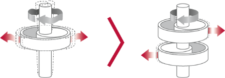

		<div class="row text-center text-lg-left " class="ventanas" style="background-color: #fff;">
			<div class="col-lg-12 pt-lg-6 pt-4 pb-4 px-lg-5">
				<div></div>
				
			</div>
			<div class="col-lg-8 pl-lg-5 pb-3">
				<div class="mt-4 mb-0"><h2 class="titulov">FUNCIONAMIENTO SILENCIOSO</h2></div>
			</div>	
			<div class="col-lg-5 pl-lg-5 pb-lg-6 pb-3">
				<div class="subtitulo pb-4">¿Cómo funciona?</div>
				<div class="texto">
					<strong>Ventila Única de LG</strong>
				</div>
				<div class="texto mt-3">
					El ruido disminuye considerablemente mediante la reducción  de la presión en la superficie de la cuchilla del ventilador al  entrar en contacto con el ruido del aire.
				</div>	
				
			</div>
			<div class="col-lg-7 pb-lg-6 pb-4 pr-lg-5">
				
				<div class="pt-3"></div>
			</div>
		</div>